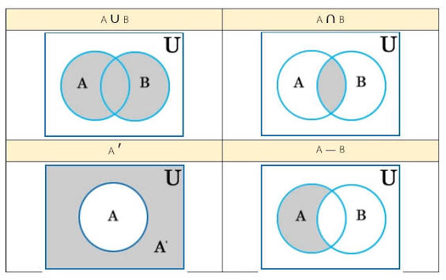

ทิวลิป

ดอกทิวลิป เป็น พืช หัวใต้ดิน ยืนต้น ที่ ออกดอกในฤดูใบไม้ผลิ ในสกุลTulipaดอกของมันมักมีขนาดใหญ่ สวยงาม และมีสีสันสดใส โดยทั่วไปจะเป็นสีแดง ส้ม ชมพู เหลือง หรือขาวมักจะมีจุดสีที่แตกต่างกันที่โคนกลีบดอกด้านใน เนื่องจากมีความแปรปรวนในระดับหนึ่งภายในประชากรและประวัติการเพาะปลูกที่ยาวนานการจำแนกประเภท จึงมีความซับซ้อนและ เป็นที่ถกเถียงกัน ดอกทิวลิปเป็นสมาชิกของวงศ์ลิลลี่ Liliaceae ร่วมกับสกุลอื่นๆ อีก 14 สกุลโดยมีความสัมพันธ์ใกล้ชิดที่สุดกับAmana , ErythroniumและGageaในเผ่าLilieae